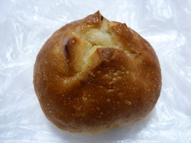
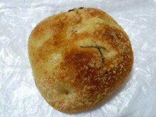
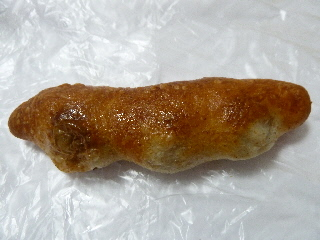

パーネドーロのレーズンパン
更新日 : 2014/01/05
パッと見レーズンパンに見えませんね。

中にレーズンがありますが少な目でした。代わりに砂糖がかかってて甘くなってました。
小さくて見た目がお洒落な感じがいいですね。
島根県松江市殿町158島根県民会館内
更新日 : 2014/01/05
パッと見レーズンパンに見えませんね。

中にレーズンがありますが少な目でした。代わりに砂糖がかかってて甘くなってました。
小さくて見た目がお洒落な感じがいいですね。
更新日 : 2011/02/11
島根県民会館内に出来たパン屋＆カフェのパーネドーロに買い物に行きました。
すぐ近くに、他にもパン屋さんが２店あるので激戦区ですね。

フォカッチャです。パンに付いてる粉粉が、なんとなく竜田揚げ風味がして面白かったです。

これはオリーブパンです。小さいパンにオリーブが3つ入っていました。